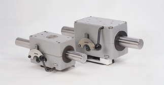

滾珠螺桿/線性滑軌
客服專線：(03)280-6015
動作原理
- 以滾珠培林組之內環緊抵於心軸面，以滾動傳動方式將心軸旋轉運動轉換成螺帽直線往復運動。 類似於螺帽於螺桿上的功能，但導程大小可調整，並可設定為0。
- 附加一些機構如V型緩衝片，行程擋臂…..可做到較往復運動更複雜的運動型態。

產品特性
- 推力可達3,600N。
- 行程長可達5M。
- 有自由移動把手。
- 行程速度可調整，往復速度亦可分別設定。
- 行程長度可調整。
- 轉向點可變化；有瞬間轉向及緩衝轉向。
- 馬達單向旋轉做動，無需正逆轉帶動往復運動。
| 型式 | 最大推力 N |
重量 KG |
長 mm |
高 mm |
寬 mm |
最大導程 mm |
詳細介紹 |
|---|---|---|---|---|---|---|---|
| K13-15-6 | 30 | 0.28 | 58 | 73.3 | 50 | 6.2 | 下載型錄 |
| RG3(4)-15-2 | 110 (220) | 0.71 (0.86) | 98 (115) | 78 | 53 | 11.4 | 下載型錄 |
| RGK3-15-0 | 100-110 | 0.53 | 100 | 80 | 86.1 | 8.0 | 下載型錄 |
| RG3(4)-20-2 | 160 (320) | 1.33 (1.53) | 119 (129) | 105 | 68 | 15.9 (15.7) | 下載型錄 |
| RGK3-20-0 | 110-130 | 0.9 | 100 | 105 | 101 | 12.2 | 下載型錄 |
| RG3(4)-22-2 | 160 (320) | 1.35 (1.55) | 119 (129) | 105 | 68 | 17.2 (17) | 下載型錄 |
| RG3(4)-30-2 | 260 (520) | 2.7 (3.2) | 150 (180) | 128 | 86 | 26 | 下載型錄 |
| RG3(4)-40-2 | 420 (840) | 5.20 (6.50) | 209 | 154.5 | 110 | 33 | 下載型錄 |
| RG3(4)-50-0 | 700 (1400) | 9.80 (11.10) | 240 | 179.5 | 132 | 41 | 下載型錄 |
| RG3(4)-60-0 | 1000 (2000) | 17.00 (19.60) | 297 | 230 | 160 | 49 | 下載型錄 |
| RG3(4)-80-0 | 1800 (3600) | 27.00 (32.00) | 368 | 276 | 188 | 76 | 下載型錄 |